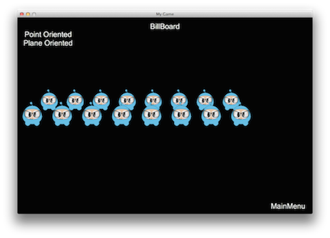
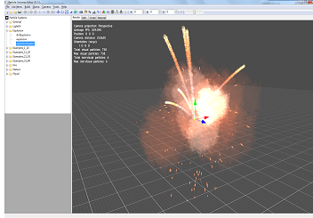
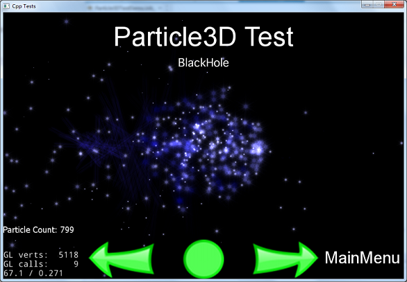

进阶话题
广告牌(BillBoard)
广告牌(BillBoard)是一种特殊的精灵对象，它总是面对摄像机，摄像机旋转，广告牌对象也会跟着旋转。广告牌在 3D 游戏中是非常常见的，比如 3D 角色头顶的文字，血条，比如滑雪比赛场景里的树木，岩石。
这就是摄像机(Camera)与广告牌(BillBoard)关联的方式：

Sprite 是 Billboard 的父类，因此广告牌的大部分功能都与精灵一样。 使用下面的方式可以创建一个广告牌：
auto billboard = BillBoard::create("Blue_Front1.png", BillBoard::Mode::VIEW_POINT_ORIENTED);
你可以更改广告牌的模式为，广告牌面向摄像机 XOY 平面，这样创建
auto billboard = BillBoard::create("Blue_Front1.png", BillBoard::Mode::VIEW_PLANE_ORIENTED);
这两个创建方法看起来有点不一样，因为传入的第二个参数不同，第二个参数确定了广告牌的模式，有两种选择：
VIEW_POINT_ORIENTED 广告牌面向摄像机所在的点，示例：

VIEW_PLANE_ORIENTED 广告牌面向摄像机所在的平面，示例：

你可以像普通节点对象一样控制广告牌，比如控制缩放，位置，旋转等等
billboard->setScale(0.5f);
billboard->setPosition3D(Vec3(0.0f, 0.0f, 0.0f));
billboard->setBlendFunc(BlendFunc::ALPHA_NON_PREMULTIPLIED);
addChild(billboard);
3D 粒子系统
在 第七章 中，我们已经学习了如何使用 2D 粒子，当你进行 3D 游戏制作的时候，为了丰富游戏的效果，你可能还需要 3D 粒子。 3D 粒子系统与 2D 粒子系统的许多概念是一样的。
Cocos2d-x 目前支持制作工具 Particle Universe 构建的粒子，Particle Universe 是一个特殊的粒子编辑器，可以让你快速，轻松的构建出各种粒子效果，如爆炸，火焰，血液。 Particle Universe 粒子编辑器生成的粒子文件格式是 .pu，Cocos2d-x 直接支持这种格式。 由 PUParticleSystem3D 类负责处理。 PUParticleSystem3D 提供了两种创建粒子的方法。
第一种方式传入两个参数： Particle Universe 粒子文件和相应的材质文件。 材质文件描述的是粒子的内容，对于一个粒子特效是必须的 示例：
auto ps = PUParticleSystem3D::create("lineStreak.pu", "pu_mediapack_01.material");
ps->startParticleSystem();
this->addChild(ps);
第二个方法传入一个参数，Particle Universe 粒子文件。 使用这种方法创建粒子，与粒子文件相同的文件夹中所有的材质文件都将被自动加载。 示例：
auto ps = PUParticleSystem3D::create("electricBeamSystem.pu");
ps->startParticleSystem();
this->addChild(ps);
注意：使用第二种方法，可能会导致加载时间增加，消耗内存增加。 如果你知道需要使用的材质，请选第一种方法。
下图左边是 Particle Universe 中的粒子，右边是该粒子使用 Cocos2d-x 运行的效果。
 
在游戏中加载好了粒子效果，接下来就可以尝试进行一些控制操作，如开始，停止，暂停，恢复和获取粒子总数。
代码：
virtual void startParticleSystem() override;
virtual void stopParticleSystem() override;
virtual void pauseParticleSystem() override;
virtual void resumeParticleSystem() override;
virtual int getAliveParticleCount() const override;
PUParticleSystem3D 派生自 Node 对象，所以你可以为刚刚创建的粒子，增加动作和序列！
示例：
auto ps = PUParticleSystem3D::create("blackHole.pu", "pu_mediapack_01.material");
ps->setPosition(-25.0f, 0.0f);
auto moveby = MoveBy::create(2.0f, Vec2(50.0f, 0.0f));
auto moveby1 = MoveBy::create(2.0f, Vec2(-50.0f, 0.0f));
ps->runAction(RepeatForever::create(Sequence::create(moveby, moveby1, nullptr)));
ps->startParticleSystem();
组合动作和序列可能会产生有趣的黑洞效果

可以使用 AttachNode 将粒子绑定到其它 3D 模型上，示例：
auto sprite3d = Sprite3D::create("orc.c3b");
sprite3d->setPosition3D(Vec3(0.0f, 0.0f, 0.0f));
sprite3d->setRotation3D(Vec3(0.0f, 180.0f, 0.0f));
auto animation = Animation3D::create("orc.c3b");
if (animation)
{
auto animate = Animate3D::create(animation);
sprite3d->runAction(RepeatForever::create(animate));
}
auto handler = PUParticleSystem3D::create("lightningBolt.pu");
handler->startParticleSystem();
sprite3d->getAttachNode("Bip001 L Hand")->addChild(handler);
this->addChild(sprite3d);